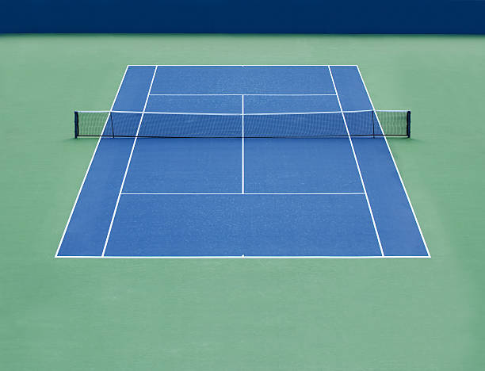

Home
About
A game in which two or four players strike a ball with rackets over a net stretched across a court. The usual form (originally called lawn tennis ) is played with a felt-covered hollow rubber ball on a grass, clay, or artificial surface
Surfaces
Tennis is usually played on four surfaces:
-
Grass Courts
-
Hard Courts

-
Clay Courts
A clay court is a tennis court surface made of compacted earth, typically crushed brick and/or stone, and often used in professional tournaments like the French Open. It's known for its slower pace, allowing for more strategic play and longer rallies, and its unique texture which provides a different feel and challenge for players.
Two types:
Red Clay
Red clay, common in Europe and Latin America, is generally slower and more slippery, with a tendency for the ball to bounce higher. Green clay, prevalent in the US and Canada, is typically faster and less slippery, though still slower than hard courts. Red clay favors baseliners who can capitalize on longer rallies and use heavy topspin to generate high bounces.
Green Clay

A clay court is a tennis court surface made of compacted earth, typically crushed brick and/or stone, and often used in professional tournaments like the French Open. It's known for its slower pace, allowing for more strategic play and longer rallies, and its unique texture which provides a different feel and challenge for players.
-
Artificial Grass

Artificial grass tennis courts offer a durable and low-maintenance alternative to natural grass or clay courts. They mimic the feel of natural grass, allowing for sliding and pivoting, while providing a softer, more cushioned surface that is easier on joints. Synthetic grass courts are also known for their all-weather capabilities, allowing for year-round play without the need for watering or mowing.
Grass tennis courts, while traditional and iconic (especially at Wimbledon), are less common than hard or clay courts due to maintenance challenges and cost. They offer a faster, lower-bounce playing surface compared to clay, favoring aggressive, serve-and-volley style play. However, grass courts require significant upkeep, can become unplayable in wet conditions, and are more expensive to construct and maintain.
Hard courts, commonly found in tennis, are typically made of materials like asphalt or concrete and are distinguished from grass and clay courts. They offer a relatively fast and consistent playing surface, though the exact speed can vary depending on the material and surface conditions. Hard courts are popular for both recreational and professional play, with the US Open and Australian Open being played on hard courts.